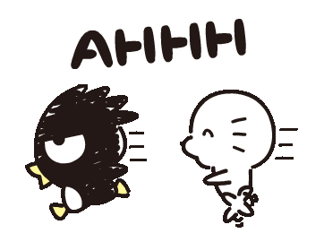

Dear Baby, babe, honeybunch, miluv, and many more,
i’ve been trying to find the right words to say everything that’s been sitting in my heart, pero murag kulang gihapon. but i’ll still try, because you deserve to know how much you really mean to me.
i love you—like, deeply. more than i expected i ever could. it’s not just in the big moments, but even in the small, random ones. kanang out of nowhere, i think about you. or when i’m doing something simple and i suddenly wish you were there with me. everything just feels lighter knowing you’re in my life. loving you feels so natural… like my heart already chose you before i could even explain why.
i keep wishing for more time with you. not just the special days, but even the ordinary ones. kanang wala lang, we’re just there together, doing nothing special but still happy. i want more conversations, more laughter, more quiet moments, more memories we can look back on someday. time with you never feels wasted—it always feels right.
i know it’s not always easy. love isn’t supposed to be perfect man pud. and i also know i’m not always easy to handle. i’m sorry if sometimes my behavior gets too much, or if i get too emotional or sensitive. i’m still learning, still growing, but please know i never mean to hurt you. i’m trying, especially for us.
and about us… i like how we can be completely ourselves with each other. even in the playful, kinda crazy, sometimes “out there” sides of us 😭 instead of making me feel weird or judged, you match my energy. you don’t make me feel off—you make me feel understood. your compliments really do make me feel like i'm the prettiest woman, and i hope that goes for you too, as you are not what you say "pamana raman ko", you're lovely, cute :>, so handosme hehe. thank you and that honestly means so much to me.
but what i’m really sure about is that you’re someone i’d choose, over and over again. even on hard days, even when things feel uncertain, my heart still chooses you. and that has to mean something.
i pray for us, more than you probably think. i pray that we grow together, that we understand each other more, and that whatever comes our way makes us stronger instead of pulling us apart. i pray for something real… something that lasts. a future where we still choose each other every day. being with you feels like coming home.
you mean so much to me, even in ways i don’t always know how to say. you’ve become such an important part of my life, and i don’t take that lightly. i care about you—your happiness, your dreams, your peace… everything about you.
no matter where this goes, i just want you to know that loving you has already been something beautiful for me. and if we’re given the chance to keep choosing each other, i’ll hold onto that with everything i have.I love you, Dylan. please more memories, more kulit moments, more late-night talks, more lambing, more hugs, more “us.” i hope we never run out of love to give each other.
forever thankful for your existence.
with all my heart,
bea 💗